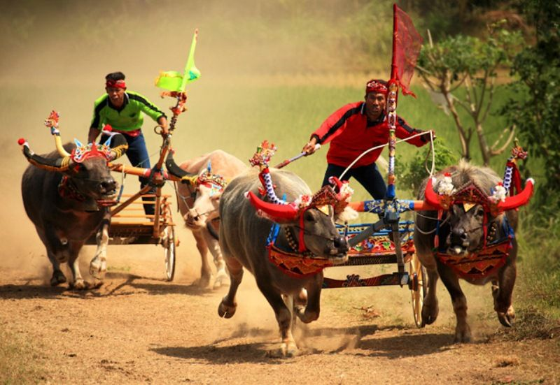
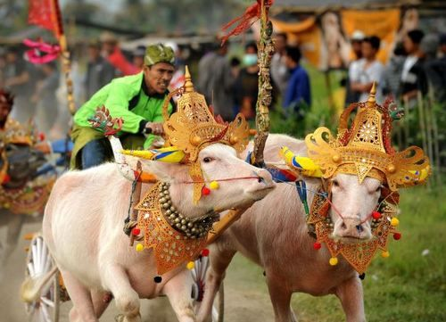

1. Lebih dari Sekadar Balapan
Muncul sejak abad ke-14, Karapan Sapi awalnya adalah cara petani Madura mengisi waktu luang setelah membajak sawah. Namun sekarang, ini adalah ajang **pertaruhan harga diri**. Sapi-sapi yang menang dalam kejuaraan besar harganya bisa melonjak hingga ratusan juta rupiah, menjadikannya simbol status sosial bagi pemiliknya.

2. Perawatan Bak Atlet Profesional
Sapi karapan tidak diberi makan rumput biasa. Mereka mendapatkan perawatan eksklusif seperti **jamu khusus** yang terdiri dari puluhan telur ayam kampung setiap harinya, madu, hingga pijatan rutin agar otot-ototnya tetap lentur. Sebelum bertanding, sapi-sapi ini juga dirias dengan hiasan emas dan kain mewah yang disebut Pajangan.
Tahukah Kamu?
Jarak lintasan Karapan Sapi biasanya sekitar 100-200 meter, dan sapi tercepat bisa menempuhnya hanya dalam waktu sekitar 10 detik. Itu bahkan lebih cepat dari rata-rata lari manusia biasa!